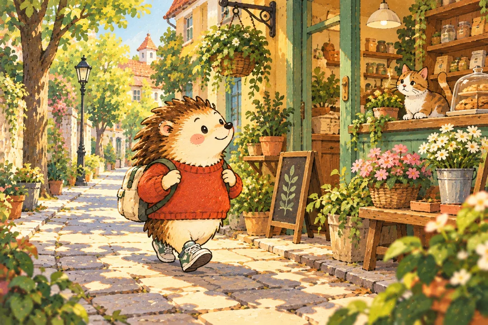

나의 결과는?
가벼운 산책형
집에만 있으면 오히려 답답해지는 타입이런 타입이에요
당신은 큰 일정이 없어도 밖으로 한 번 나가야 기분이 환기되는 편입니다. 멀리 가지 않아도 동네 산책, 가벼운 구경, 작은 외출이 회복의 핵심이 됩니다.
이런 순간, 나답죠
목적지가 없어도 운동화를 신고 동네를 한 바퀴 돌고 싶어져요. 새로 생긴 가게나 달라진 나무를 보고 돌아오는 시간이 잘 어울려요.
- 적은 비용으로도 기분 전환이 가능함
- 밖에서 에너지를 재정비하는 감각
- 주말을 답답하지 않게 쓰는 편
놓치기 쉬운 부분
밖으로 나가는 일이 또 하나의 의무가 되면 쉬는 의미가 흐려져요. 컨디션이 낮은 날에는 짧게 돌아와도 충분해요.
오늘 해볼 한 가지
오늘은 익숙한 길에서 한 블록만 다르게 걸어보세요.
추천 주말 루틴
동네 카페공원 산책가벼운 장보기적은 비용으로도밖에서 에너지를
다른 타입과 나란히 보면
재미로 보는 성향 콘텐츠예요. 전문적인 심리 검사나 진단이 아니며, 타입 간 관계도 비교를 위한 이야기예요.
답변별 유형 점수를 더해 가장 높은 타입을 보여줘요. 동점이면 포근 집콕형 → 약속 충전형 → 리듬 회복형 → 가벼운 산책형 순서에서 앞선 타입이 표시돼요.
읽어봤다면, 친구와 비교해볼까요?
다음 테스트도 이어서 보기
 나만의 여행 성향 찾기
나만의 여행 성향 찾기
 직장인 회복력 체크
직장인 회복력 체크
 집중력 루틴 진단
집중력 루틴 진단